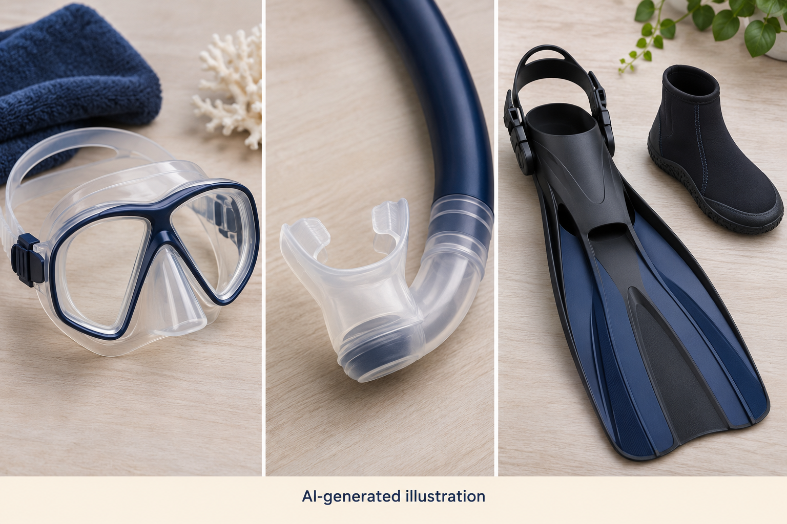
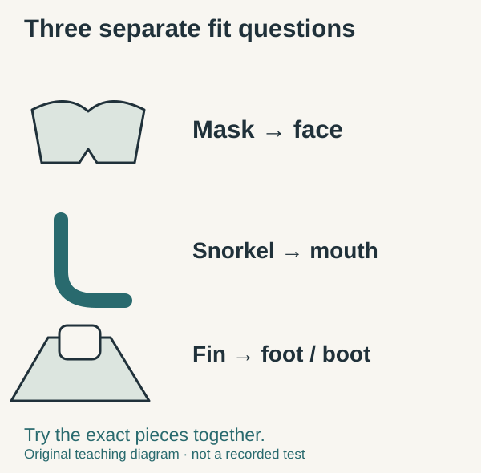
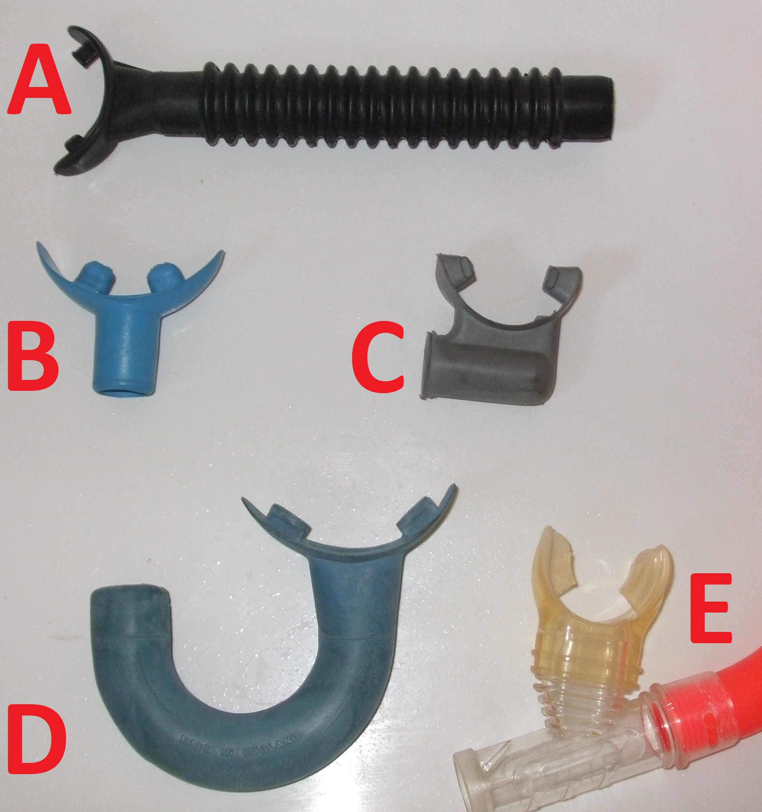
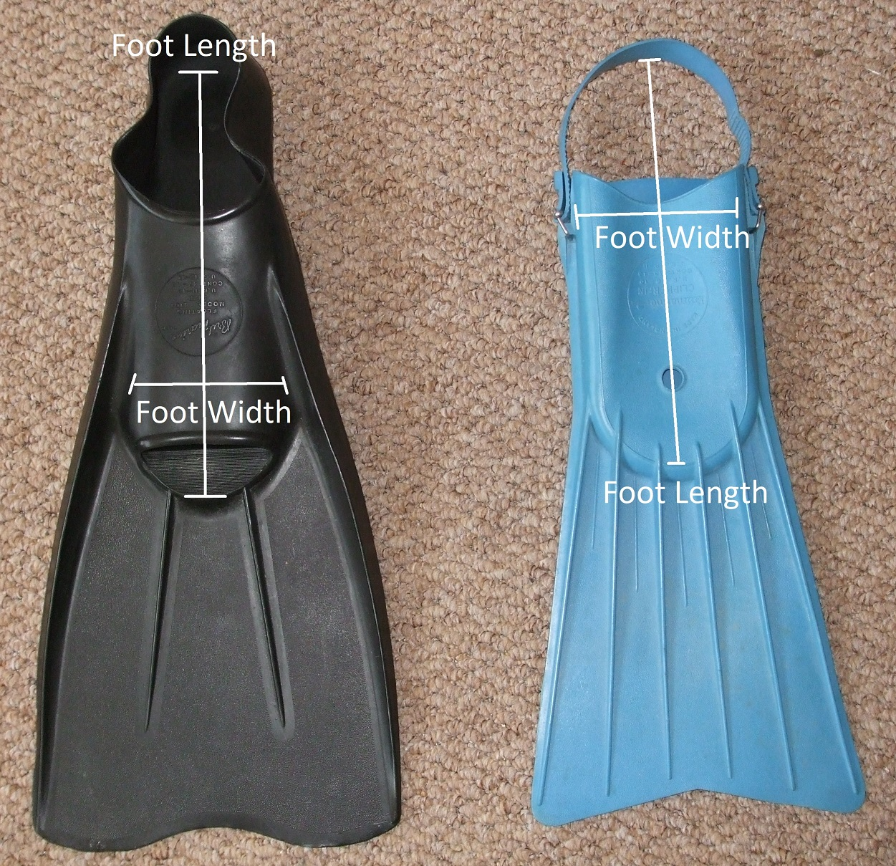
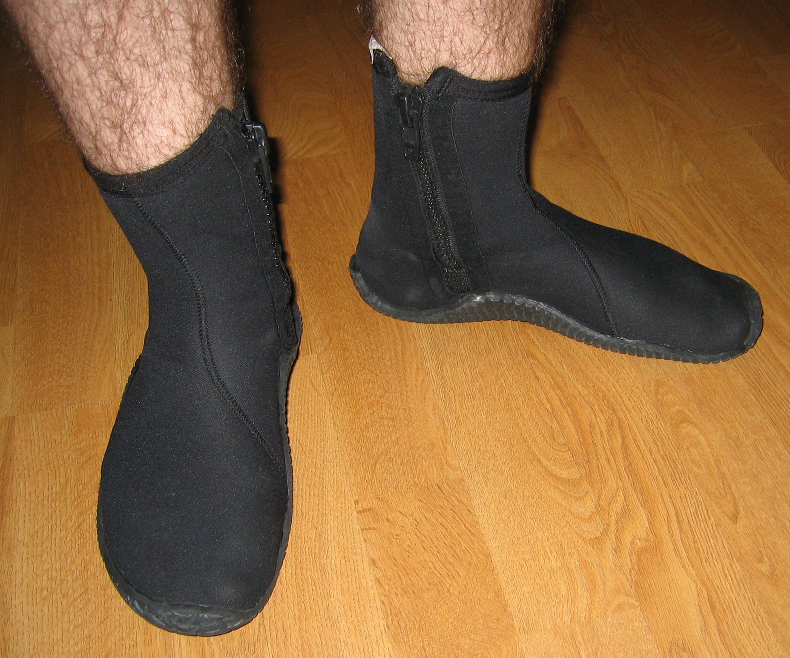

Learn · Gear
Find your mask, snorkel and fin fit
Look at the skirt that touches your face, the mouthpiece you hold and the pocket your foot goes into. Each needs its own fitting.

Three fitting checks


Where does the mask touch your face?
The soft skirt is the edge that rests against your skin. Try the exact mask with a fitter. Check the seal, whether you can reach your nose, and how the strap feels.
Compare mask models, lenses and prices
The October 28 mask observations include Cressi F1 $49.95, Matrix $59.95, Big Eyes Evolution $99.95, TUSA Freedom HD $115, Atomic Frameless family offers $149.95–$159.95 and Venom ARC $279.95. These are different variants and price scopes. They do not rank seal quality on your face. F1’s manufacturer Clear default was unavailable/backordered; a retailer Pink offer is a different selected variant.
Assess the actual seal, nose access and strap comfort with appropriate fitting help. Frameless wording does not guarantee universal face fit. Big Eyes Evolution optical lenses are separate, side- and diopter-specific purchases; the packet does not select them for a user. Follow the exact model’s coating-care instructions, particularly for a treated lens such as Venom ARC; no abrasive preparation method was qualified.
Try the snorkel with your mask
Clip the keeper to the mask strap and try the mouthpiece. Check where the tube sits and whether the mouthpiece feels comfortable in that position. If you plan to stow a flexible snorkel, bring the pocket you will use.
A dry or semi-dry top is designed for surface snorkeling. You still need to surface to breathe through it.
Compare snorkel designs and prices
The recorded surface-snorkel anchors were Cressi Gringo $11.95, Corsica $27.95, Alpha Ultra Dry $49.95, SCUBAPRO Spectra Dry $69 and Atomic SV2 $84.95. The highest-priced example is semi-dry, not an upgraded version of every dry-top function. A dry or semi-dry design is not an underwater breathing supply.
Check mouthpiece comfort, the keeper on the actual mask strap and any interference with the regulator arrangement. A flexible snorkel still needs to fit the intended BCD pocket if stowage matters. The Spectra page contains conflicting flexibility wording; record the unresolved feature rather than silently selecting the description you prefer.



Look at the heel of the fin
- Full-foot pocket
- An enclosed heel holds the foot. Check which footwear the exact model accommodates.
- Open heel
- A strap runs behind the heel. For a boot-fit model, try it with your own boot.
Compare full-foot and boot-fit examples
Cressi Rondinella at $44.95 is a full-foot snorkeling/swimming candidate. Its foot pocket is not qualified for the exposure-lane boots. Shore-entry footwear and suitability for a particular scuba dive need a separate plan. Do not create a low-price scuba package by adding that fin to arbitrary boots.
The open-heel or boot-fit candidates include Pro Light $99.95, GO Sport $179, Avanti Quattro + $217.95, Jet Fin with spring strap $229 and Seawing Supernova $269. Those observations are dated October 28. Quattro + and Quattro 4X are different models; GO Sport and bare-fit GO Travel are different products. Preserve the exact model when searching for size charts.



Try the boot and fin together
Two boots with the same shoe size can have different soles and thicknesses. Check the size chart for the exact fin, then try that boot in that pocket with fitting help.
Read the model-specific footwear notes
Bring the selected boot or drysuit footwear, including its sole and thickness, to the fin fitting. SCUBAPRO has separate Jet Fin footwear guidance and Supernova/MFS pocket guidance. Neither becomes a universal shoe-size conversion for other models. Pro Light’s overlapping size ranges also do not create a one-size-up rule.
A Delta Short 3mm boot family offer at $59 and a selected Jet Fin offer at $229 sum to $288 in the inherited price observations. That number does not establish an exact size pairing, a completed fitting or a performance result. Ask what the actual boot/fin combination changes in handling through appropriate instruction and fitting.



Leave with a fitting record
Write down the exact model and size, the footwear you tried, where you felt pressure and what you want to try again. Take that record with you when you compare another model.
Read the buying notes and price dates
Write the actual model code, selected color or pocket, fitting result and remaining uncertainty for each item. Preserve a family price range when no exact variant has been chosen. Do not turn an order button into a promise of stock in that size.
This shortlist is not a comprehensive market survey. If none of the documented masks fits, the useful result is to broaden the fitting choices, not to pick the most expensive row. The same applies to footwear and fins: compatibility is established through exact model guidance and fitting evidence, with the person’s intended use kept in view.
Price observations are dated research, not a delivered quote. Availability, exact variants and any unresolved connections need checking before purchase. These comparisons have not been tested as assembled equipment.

Model and price examples were researched in October 2026. Our approach to field guides